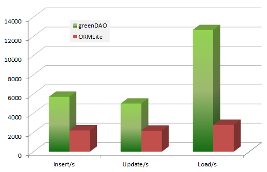

greenDAO
Android ORM for SQLite
Matthias Friedrich
5. Dez. 2011
motivation

O/R-Mapping - what is it
- persisting objects into relational databases
- write database tables
- write DAOs (data access objects)
- write entities (domain model)
- write entities (domain model)
- write parser
- from entities to SQLite
- from SQLite to entities
motivation
O/R-Mapping - an automated database approach
- define the domain model
- let the O/R-Mapper compile it
- use generated entities, DAOs and parser
motivation
greenDAO - an introduction
greenDAO
- O/R-Mapper for Android
- open sourced under GPLv3 respectively Apache 2
- developed by greenrobot
- preview release on 4th August 2011
- version 1.0 and sources published on 24th October 2011
greenDAO - an introduction
features
- DaoSession - similar to Hibernate Session or JPA's Entity Manager, manages caching of and creates objects
- to-one, to-many, many-to-many - no matter what, request your relations directly via greenDAO
- QueryBuilder - make non-simple requests without touching SQL
- SQL scripts - Android doesn't support it, greenDAO does
greenDAO - an introduction
more features
- active entities, eager and lazy loading - resolve relations within the same select as the base entity or on the fly without making a query directly
- protocol buffers - talk via protobuf to your server? persist the result directly into the database
- small library - jar-size < 60KB
- future plans - generating adapters, maybe CRUD activites
greenDAO - an introduction
performance
- it's fast, very fast - perform queries with a rate of 12.000 cached entities/sec on a Nexus S (20.000 when cached)

greenDAO - an introduction
consisting of several sub projects
- DaoCore - core library, loads and handles requests and entities (Apache licence v2)
- DaoGenerator - reads the model and generates DaoSession, DAOs and entities (GPL v3)
- DaoTest - unit test suite for greenDAO (GPL v3)
greenDAO - an introduction
greenDAO - using it
preparations
- download the starter package - greendao-orm.com/download
- add the library - greenDAO.jar
- see the documentation - greendao-orm.com/documentation
greenDAO - using it
DaoGenerator
- create util-project - project to generate needed Java-classes
- add libraries - freemarker.jar, greenDAO-generator.jar
- define your model - via a simple API and specify your Android project location
- let greenDAO generate your classes - entites, DAOs and DaoSession will be integrated into your Android project
greenDAO - using it
DaoGenerator
public static void main(String[] args) {
Schema schema = new Schema(1, "de.peacei.android.foodwatcher.data.database");
Entity weekPlan = schema.addEntity("WeekPlanEntity");
weekPlan.addIdProperty();
weekPlan.addByteProperty("week").notNull();
...
Entity menu = schema.addEntity("MenuEntity");
...
Property prop = menu.addLongProperty("weekPlanId").getProperty();
menu.addToOne(weekPlan, prop);
Entity meal = schema.addEntity("MealEntity");
meal.addIdProperty();
meal.addStringProperty("name").notNull();
...
prop = meal.addLongProperty("menuId").getProperty();
meal.addToOne(menu, prop);
new DaoGenerator().generateAll("../FoodWatcher/src-gen", schema);
}greenDAO - using it
example: getting the DaoMaster
... OpenHelper helper = new DaoMaster.DevOpenHelper(context, "fooddatabase", null); DaoMaster daoMaster = new DaoMaster(helper.getWritableDatabase()); ...
greenDAO - using it
example: insert
... daoSession = daoMaster.newSession(); WeekPlanEntityDao weekPlanEntityDao = daoSession.getWeekPlanEntityDao(); long weekPlanId = (String.valueOf(year)+String.valueOf(weekNumber)+mensaId).hashCode(); WeekPlanEntity weekPlanEntity = new WeekPlanEntity(weekPlanId, weekNumber, year, mensaId.hashCode()); weekPlanEntityDao.insertOrReplace(weekPlanEntity); daoSession.clear(); ...
greenDAO - using it
example: query
...
daoSession = daoMaster.newSession();
WeekPlanEntityDao weekPlanDao = daoSession.getWeekPlanEntityDao();
QueryBuilder wPQB = weekPlanDao.queryBuilder().
where(WeekPlanEntityDao.Properties.Year.eq(CalendarUtil.getYear(new Date())),
WeekPlanEntityDao.Properties.Week.eq(weekNumber),
WeekPlanEntityDao.Properties.Mensa.eq(mensa.getId().hashCode()));
List wPEList = wPQB.list();
daoSession.clear();
...
greenDAO - using it
demo
- sources on bremen-gtug.googlecode.com